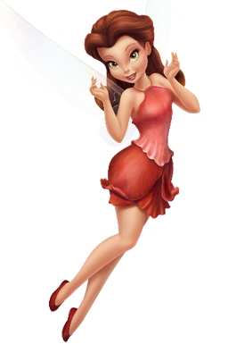

Rosetta
Rosetta é a fada do jardim, elegante, charmosa e apaixonada por flores. Com seu sotaque sulista e senso de moda, ela é gentil e sempre pronta para dar conselhos com estilo.
Características da Rosetta
Fada do Jardim
Especialista em cuidar de flores e plantas, Rosetta tem uma conexão natural com o mundo vegetal.
Estilo e Elegância
Sempre bem arrumada e charmosa, Rosetta é vaidosa e aprecia a beleza em tudo ao seu redor.
Empatia
Apesar de sua vaidade, é muito empática e uma amiga leal, sempre ouvindo e apoiando as outras fadas.
Curiosidades
- Rosetta fala com um encantador sotaque sulista americano.
- Sua cor predominante é o vermelho-rosado, refletindo sua ligação com as flores.
- É uma das primeiras amigas de Tinker Bell, ajudando-a a se adaptar ao mundo das fadas.